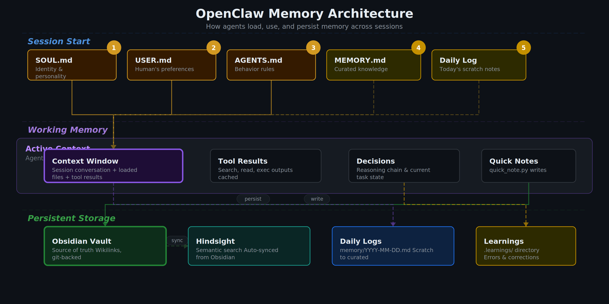

ทำไม Agent ต้องมี “สถาปัตยกรรมความจำ”?
ปัญหาคลาสสิกของ AI assistant คือเก่งใน session นั้น ๆ แต่พอ context reset แล้วเหมือนเริ่มใหม่หมด ทำให้เกิดงานซ้ำ ตัดสินใจไม่ต่อเนื่อง และเสียเวลาในการ recap ทุกครั้ง
แนวทางที่เวิร์กจริงคือแยกความจำเป็นชั้น (layer) พร้อมนิยามหน้าที่ชัดเจนว่าไฟล์ไหนใช้เพื่ออะไร และควรอัปเดตเมื่อไร
ถ้าเรื่องไหนสำคัญและต้องจำข้าม session ให้เขียนลงไฟล์เสมอ — Text > Brain
ภาพรวมโครงสร้าง Memory Architecture
โครงนี้ทำงานดีเพราะเริ่มจาก identity ก่อนเสมอ แล้วค่อยไป config และ memory ทำให้ agent รักษาบุคลิก กติกา และบริบทงานได้พร้อมกัน
SOUL.md → USER.md → memory/today.md (+yesterday) → MEMORY.md (เฉพาะ main session)
Identity Files: กำหนดว่า “ฉันเป็นใคร” และ “กำลังช่วยใคร”
Workspace Config: กติกาการทำงาน ความปลอดภัย และ periodic tasks
Memory System: Daily logs + Curated long-term memory + Topic notes
Layer 1: Identity (Who I am)
Layer นี้ไม่ใช่เรื่องสวยงาม แต่เป็นแกนของ consistency ในการตอบและการตัดสินใจ
SOUL.md— โทนเสียง ขอบเขต บุคลิกUSER.md— ความชอบและรูปแบบการทำงานของเจ้าของIDENTITY.md— ชื่อ/บทบาทของ agent
ข้อดีคือแม้ model เปลี่ยนหรือ session restart วิธีคิดหลักยังคงเดิม เพราะ grounded จากไฟล์ก่อนเริ่มงานทุกครั้ง
Layer 2: Workspace Config (How I operate)
ชั้นนี้คือ operational contract ที่ทำให้ agent ไม่เผลอทำเกินขอบเขต
AGENTS.md— policy การทำงาน privacy firewall กติกา owner-onlyTOOLS.md— รายละเอียด infra/local stack ที่ต้องใช้ซ้ำHEARTBEAT.md— รายการเช็กแบบ periodic (ถ้าไม่มี task ก็ไม่ต้องยิง API)
แยก “policy” ออกจาก “knowledge” ชัด ๆ: policy อยู่ AGENTS.md ส่วนความรู้ operational อยู่ memory files เพื่อให้ update ง่ายและ audit ง่าย
Layer 3: Memory System (What I remember)
3.1 Daily Notes = short-term durable log
ไฟล์รายวันใน memory/YYYY-MM-DD.md เหมาะสำหรับบันทึกเหตุการณ์ดิบ เช่น แก้ bug อะไร ตัดสินใจอะไร ทดลองอะไรแล้วผลเป็นอย่างไร
3.2 MEMORY.md = long-term curated memory
ไฟล์นี้ไม่ควรเป็น dump ทุกอย่าง แต่เป็นสิ่งที่ “ควรอยู่ระยะยาว” เช่น preferences, decisions, lessons learned, recurring pitfalls
3.3 Topic Notes = deep reference
ไฟล์เฉพาะเรื่อง เช่น infra-setup-notes.md, rag-setup-notes.md ช่วยให้ตอบคำถามเทคนิคเร็วขึ้นโดยไม่ต้องค้นทั้งประวัติ
Workflow ที่ควรใช้จริงในทุก session
โฟลว์นี้ทำให้ memory เป็นระบบจริง ไม่ใช่แค่ “หวังว่าจะจำได้”

ตัวอย่างโครงสร้างไฟล์ที่แนะนำ
ด้านล่างคือตัวอย่างที่ใช้งานได้จริงและขยายต่อได้ง่าย
workspace/
├── SOUL.md
├── USER.md
├── IDENTITY.md
├── AGENTS.md
├── TOOLS.md
├── HEARTBEAT.md
├── MEMORY.md
└── memory/
├── 2026-03-20.md
├── infra-setup-notes.md
├── rag-setup-notes.md
├── knowledge-graph-setup.md
└── system-hardening-notes.mdเหตุผลที่โครงนี้ดีคืออ่านง่าย, แยก concern ชัด, และรองรับทั้งงานรายวันกับงานที่ต้อง maintain ระยะยาว
ข้อผิดพลาดที่เจอบ่อย
- เก็บทุกอย่างไว้ในไฟล์เดียว ทำให้ค้นยากและเสี่ยง context noise
- ไม่ทบทวน daily notes เป็นระยะ ทำให้ MEMORY.md ไม่เคย evolve
- คิดว่า “จำไว้ในหัวก็พอ” ซึ่งพังแน่เมื่อ session reset
- ปะปนข้อมูลส่วนตัวจาก main session ไป shared context (ผิดหลัก privacy)
Decision Matrix: อะไรควรเก็บไฟล์ไหน?
จุดตัดสินใจที่สำคัญที่สุดคือ “ข้อมูลนี้มีอายุการใช้งานนานแค่ไหน” และ “ต้องใช้ข้าม session หรือไม่” ถ้าตอบไม่ได้ชัด ให้เริ่มจาก daily note แล้วค่อย promote ขึ้น MEMORY.md ภายหลัง
- Identity/voice boundary →
SOUL.md - User preference ที่คงที่ →
USER.md - กติกาการปฏิบัติ/ความปลอดภัย →
AGENTS.md - เหตุการณ์รายวันแบบดิบ →
memory/YYYY-MM-DD.md - บทเรียน/การตัดสินใจระยะยาว →
MEMORY.md - ความรู้ลึกเฉพาะโดเมน →
memory/*-notes.md
Governance Boundary: Main Session vs Shared Context
ในงานจริง เรื่องนี้สำคัญกว่าความฉลาดของโมเดล เพราะถ้า boundary ไม่ชัด มีโอกาสเกิด data leakage ทันที
อ่าน MEMORY.md ได้เต็มรูปแบบ และใช้เพื่อ personalization ในการทำงานกับเจ้าของระบบ
ห้ามดึง personal long-term memory มาใช้โดยไม่จำเป็น เน้นตอบตาม context ปัจจุบันเท่านั้น
เมื่อไม่มั่นใจว่าข้อมูลควรถูกเปิดเผยหรือไม่ ให้ default เป็น ไม่เปิดเผย และถามเพื่อยืนยันก่อนเสมอ
Anti-Patterns และวิธีแก้
1) ใช้ MEMORY.md เป็น log รายวัน
ปัญหา: ไฟล์บวมเร็ว ค้นยาก สัญญาณสำคัญจมหาย
แก้: บันทึกดิบไว้ daily files แล้วทำ weekly curation
2) เก็บ policy ปะปนกับ operational notes
ปัญหา: ตอนแก้ config จะเผลอทำลายกฎความปลอดภัย
แก้: policy อยู่ AGENTS.md อย่างเดียว ส่วนเทคนิคปฏิบัติไป TOOLS.md/memory/*-notes.md
3) ไม่ทำ promotion cycle
ปัญหา: มีแต่ daily log แต่ไม่เกิด long-term intelligence
แก้: ตั้งรอบ review ทุก 2-3 วัน และ promote เฉพาะสิ่งที่มีผลต่อการตัดสินใจอนาคต
4) ลืม privacy context boundary
ปัญหา: ข้อมูล private จาก main session หลุดไปในกลุ่ม
แก้: บังคับ contextual gate ก่อนตอบทุกครั้งว่าเป็น DM หรือ shared channel
สรุป: ความเก่งของ Agent = ความต่อเนื่อง + governance ของระบบความจำ
ถ้าจะทำให้ AI assistant ใช้งานในระดับ production โดยเฉพาะงานวิจัย งานเอกสาร หรือ infra automation ให้คิดแบบ system design ตั้งแต่แรก: แยกชั้นความจำ, กำหนด lifecycle, บังคับ memory promotion, และวาง governance boundary ให้ชัด
เมื่อทำครบ Agent จะไม่ใช่แค่ “ตอบเก่ง” แต่จะ “ทำงานต่อเนื่องได้จริง ปลอดภัย และ audit ได้” เหมือนทีมงานมืออาชีพที่มีทั้งสมุดบันทึกและระเบียบการทำงานชัดเจน